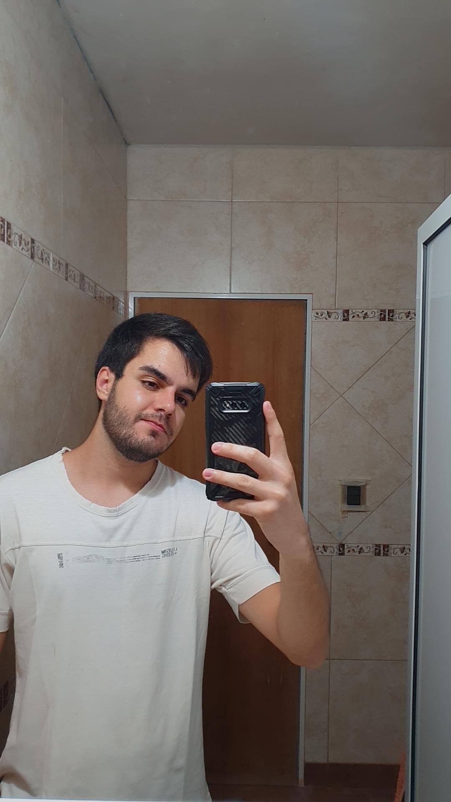

|  | ||
| Datos Personales Nombre: Andres Ivan Schupiak Fecha de Nacimiento: 06/02/2001 Nacionalidad: Argentina Domicilio: Lavalle 1180 |
||
ObjetivosComo estudiante perseverante en lo que hago, mi objetivo a corto plazo es lograr completar mis estudios universitarios. Luego sera buscar oportunidades laborales que me permitan aplicar mis conocimientos adquiridos. Estudios realizados: Universidad Nacional de Misiones: Analista en Sistemas-Licenciatura en Sistemas. 2019-en curso |
Antecedentes LaboralesEstudio Contable H&G: Asistente Contable - 03/04/2021 hasta 10/02/2022 Pasatiempo: En mis pasatiempos voy al gimnasio, salgo a caminar y paso tiempo con familia y amigos. |
|